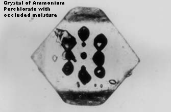

Ammonium Perchlorate has no known hydrates. It is a good oxidiser for propellant as all it's combustion products are gaseous and it produces little smoke. It has a melting point (with decomposition) of 450°C.
Ammonium Perchlorate cannot be made by electrolysis of Ammonium Chloride (or Chlorate). Ammonium Chlorate is an unstable, dangerous compound.
The procedures for making Ammonium Perchlorate assumes that you have pure Sodium Perchlorate to start with. There must be NO Chlorate present as Ammonium Chlorate will form. Ammonium Chlorate is an unstable compound that is liable to explode at 106°C. It is very dangerous when mixed with combustible materials and will be liable to ignite spontaneously at much lower temperatures. All Chlorate must be destroyed by chemical means before starting to make Ammonium Perchlorate. Recrystallizing the Sodium Perchlorate will not be good enough as there will be some Sodium Chlorate contaminant in the recrystallized product. The Sodium Chlorate should be destroyed by using chemicals and testing for the absence of Chlorate by using a sensitive test for Chlorate (like Indigo Carmine as described elsewhere on this page).
| Solubility of Ammonium Perchlorate in water | |||
|---|---|---|---|
| Temp. OC | g/100g soln. | g/100mL satd. soln. | g/100mL H2O |
| -2.7, eutectic | 9.8 | -- | -- |
| 0 | 10.74 | 11.56 | 12 |
| 20 | -- | 20.85 | -- |
| 25 | 20.02 | -- | 25 |
| 40 | -- | 30.58 | -- |
| 45 | 28.02 | -- | 39 |
| 60 | 33.64 | 39.05 | -- |
| 75 | 39.45 | -- | 65 |
| 80 | -- | 48.19 | -- |
| 100 | -- | 57.01 | 88 |
Ammonium Perchlorate can be made by adding Ammonia gas, Ammonium Hydroxide or Carbonate to Perchloric acid.
Ammonium Perchlorate can also be make via Lithium Perchlorate and Ammonium Carbonate. The Lithium Carbonate so produced is insoluble and will precipitate leaving the Ammonium Perchlorate in solution. See the Li Perchlorate section for US Pat. No. 3,020,124.
Just about any other Perchlorate salt can be made if you have Ammonium Perchlorate. The Ammonium Perchlorate is dissolved together with the Carbonate (or Hydroxide) of the other salt (eg. Potassium Carbonate or Hydroxide if you want Potassium Perchlorate) and the solution boiled until all the Ammonia gas and Carbon Dioxide gas goes away. You are then left with the Perchlorate of your choice.
When Ammonium Perchlorate is used, together with other chemicals, for colour production in pyrotechnic devices it is not advisable to use Sodium Perchlorate for to make it. It is very difficult to eliminate all Sodium ion contamination which will result in orange (Sodium) colour contamination.

Ammonium Perchlorate crystals have a tendency to trap water within the crystals (occluded moisture) and this can be difficult to remove by drying. It can slowly make it's way to the surface of the crystal where it will cause caking of the Perchlorate. Ammonium Perchlorate is often packed with silica gel to help counteract this problem. This moisture can be a problem when the Perchlorate is used with water sensitive compounds. If the moisture is exposed by milling it can be removed by further drying.
HIT THE BACK BUTTON ON YOUR BROWSER